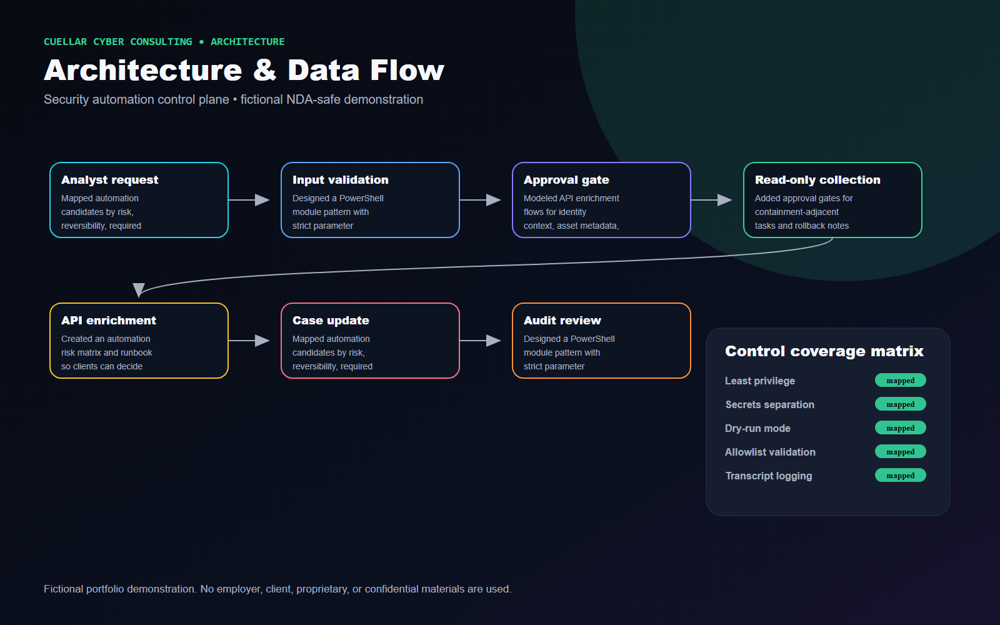
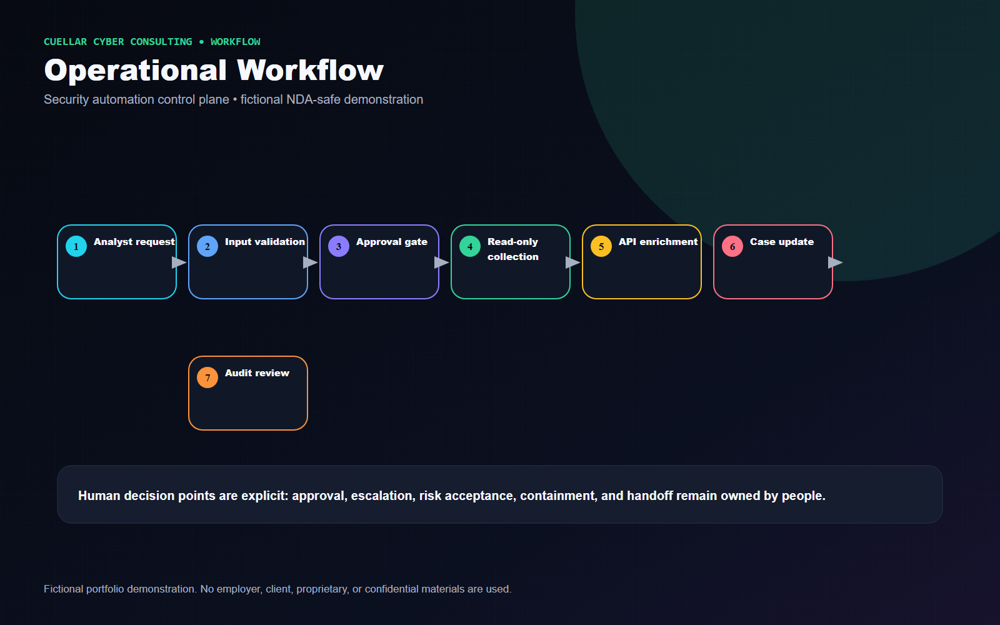
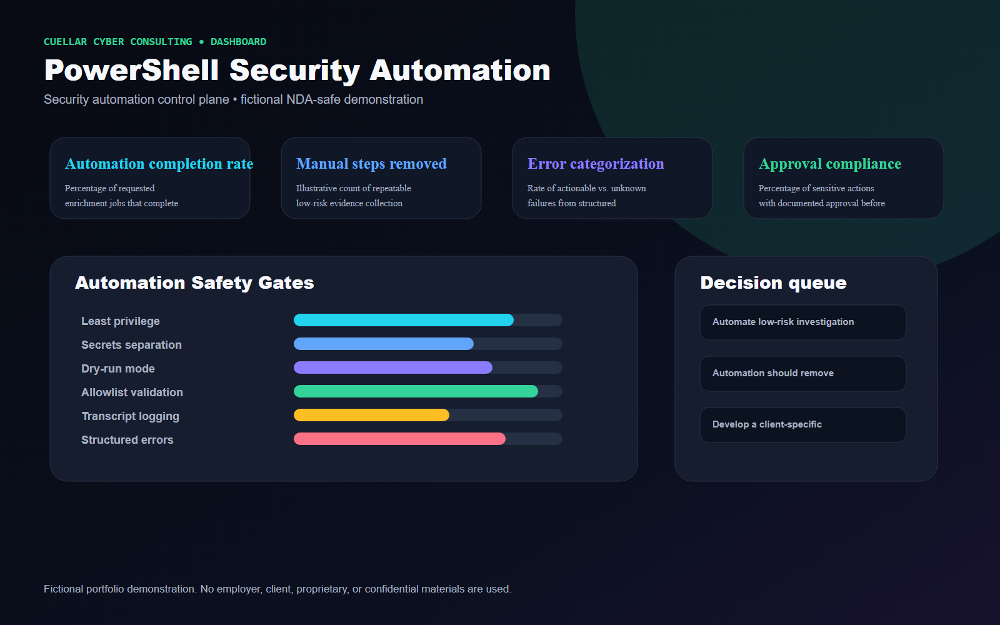

Executive Summary
Modeled secure automation as an auditable workflow with validation, least privilege, approval gates, logging, error handling, and human-in-the-loop decisions.
Fictional Client Profile
Harborline Financial, a fictional regional bank modernizing SOC evidence collection and reporting tasks.
Client Challenge and Business Risk
Client situation
A fictional security team needed repeatable PowerShell automation for investigation support without introducing unsafe scripts or unreviewed privileged actions.
Business risk
Uncontrolled scripts can create operational outages, incomplete evidence, unmanaged secrets, unclear accountability, and audit gaps during incidents.
Project objectives
- Automate low-risk investigation enrichment and evidence collection tasks.
- Define trigger, inputs, validation, execution, logging, error handling, approval controls, and rollback expectations.
- Separate read-only enrichment from actions requiring approval or change control.
- Produce maintainable documentation and operational runbooks.
Constraints and assumptions
- No destructive commands, credentials, bypass methods, or privileged exploitation instructions are included.
- Use cases are fictional and framed as safe, auditable automation concepts.
- Human approval remains required for sensitive or potentially disruptive actions.
Technical Approach
- Mapped automation candidates by risk, reversibility, required privilege, data sensitivity, and audit requirements.
- Designed a PowerShell module pattern with strict parameter validation, read-only default behavior, transcript logging, structured JSON output, and error categories.
- Modeled API enrichment flows for identity context, asset metadata, file metadata, and case updates using placeholders only.
- Added approval gates for containment-adjacent tasks and rollback notes for any state-changing workflow.
- Created an automation risk matrix and runbook so clients can decide what should remain manual.
Architecture Diagram

Operational Workflow

Security Controls
- Least privilege
- Secrets separation
- Dry-run mode
- Allowlist validation
- Transcript logging
- Structured errors
- Approval gates
- Rollback notes
Technologies and Frameworks
Deliverables
- Security automation architecture
- PowerShell workflow diagram
- API enrichment flow
- Evidence collection pipeline
- Safety-control checklist
- Error-handling workflow
- Approval gate diagram
- Automation risk matrix
- Operational runbook

Business Outcomes and Success Measures
Metrics are labeled as illustrative example targets or proposed success measures. They are not real accomplishments.
| Measure | How it would be interpreted |
|---|---|
| Automation completion rate | Percentage of requested enrichment jobs that complete without manual correction. |
| Manual steps removed | Illustrative count of repeatable low-risk evidence collection steps replaced by guarded workflow. |
| Error categorization | Rate of actionable vs. unknown failures from structured logging. |
| Approval compliance | Percentage of sensitive actions with documented approval before execution. |
Tradeoffs and Design Decisions
- Automation should remove repetitive work, not remove accountability for risky actions.
- Read-only modules are easier to approve and maintain; containment actions require stronger controls.
- Secrets handling and logging must be designed together to avoid sensitive data leakage.
Lessons Learned
- Secure automation is a control system: guardrails, ownership, logging, and rollback matter as much as the script.
- The best first automations are boring, repeatable, read-only, and heavily documented.
Potential Next Phase
Develop a client-specific automation backlog ranked by risk reduction, analyst time saved, maintainability, and approval complexity.
Fictional and NDA-Safe Disclaimer
Fictional portfolio demonstration. No employer, client, proprietary, or confidential materials are used. The content does not include or imitate employer dashboards, logos, terminology, real data, real incident details, internal detections, internal code, or confidential workflows.